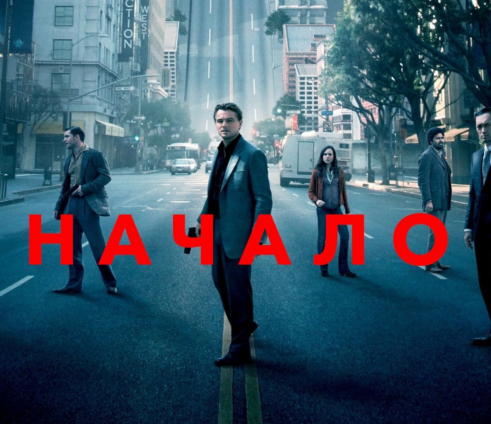

Фритрек и нулевой спринт: Подготовка к работе
</HTML>

Это было самое начало пути. На этом этапе важно было проникнуться основами и настроиться на учёбу. И, возможно, подумать, как новые знания могут повлиять на ваше будущее.
... И тут я спонтанно купил этот курс, сидя в баре в пятницу вечером. Такое бывает.